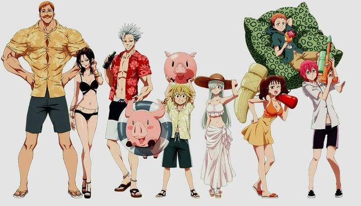

"Mergulhe no Mundo do Anime!"
Mergulhe em aventuras incríveis, mundos fantásticos e histórias emocionantes. Conheça mais sobre Nanatsu no Taizai e outros animes.

Nanatsu no Taizai
Descubra Nanatsu no Taizai, a saga dos lendários cavaleiros pecadores em uma batalha épica para salvar o Reino de Liones. Com poderes incríveis, mistérios e reviravoltas, essa aventura vai te prender do começo ao fim. Venha conhecer essa história fascinante!